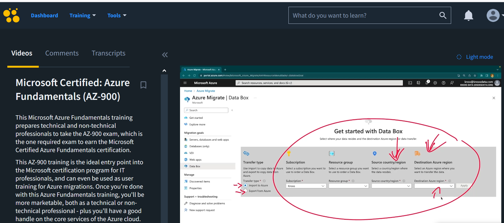
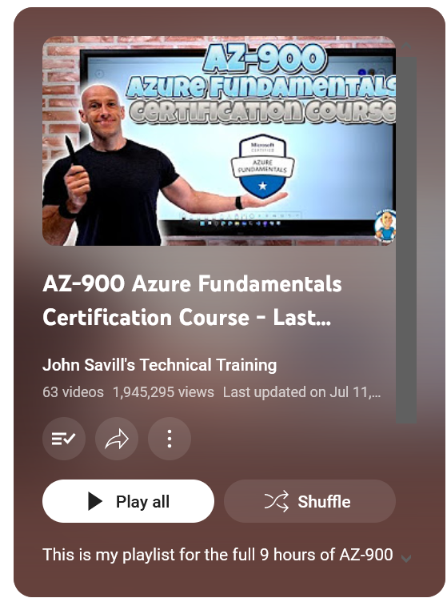

My Experience Taking the AZ-900 Azure Fundamentals Exam
One of my former colleagues mentioned that he had just earned his Azure Fundamentals certification as it was required by his employer. He described it as a simple and easy exam to pass, and he suggested I do the same. Considering I was planning to get into "the cloud" for some time, I saw this as the perfect opportunity. After procrastinating for months, I finally decided to take advantage of my CBT Nuggets subscription, kindly provided by my employer, and watched the 9-hour video series covering the exam.

During my day, I managed to find 30 to 40 minutes to watch the videos at 2x speed and take notes since most of the concepts were familiar to me. For some topics, I had to watch the videos twice to ensure I fully understood them, especially those explaining how Azure is structured and where to find what you need. It took me 6 days to complete this.
After completing the CBT Nuggets series, I moved on to ( John Savill's Technical Training YouTube playlist ). However, when I reached 40% progress on this playlist, I realized that it was mostly repeating what I had already learned from the CBT Nuggets course. So, I decided to go for it and booked my test just two days later.

The day before my test, I took four practice tests on the Microsoft official site ( Practice Test ). I scored between 85 and 98 on these practice tests, which boosted my confidence.
This was my first certification using OnVUE, the at-home option from PEARSON VUE. The process was straightforward after watching a couple of YouTube videos and following all the tips, such as keeping my room as empty as possible, having nothing on my desktop, and not drinking too much water before the test (bathroom breaks are not allowed). Fortunately, I encountered no issues at all. The proctor was nice, and after a quick check of my desk, he launched the test. With less than 40 questions, I completed the exam in 25 minutes and received immediate notification that I had passed.
All this process took me two weeks in total. While I was happy to pass, I felt somewhat underprepared, as there were a few questions that I wasn't entirely sure how to answer. Nevertheless, it was a quick win for me, providing a formal understanding of the basics of the cloud and earning me a nice and shiny badge—a good starting point to explore deeper and pursue associate-level certifications from either AWS or Azure.